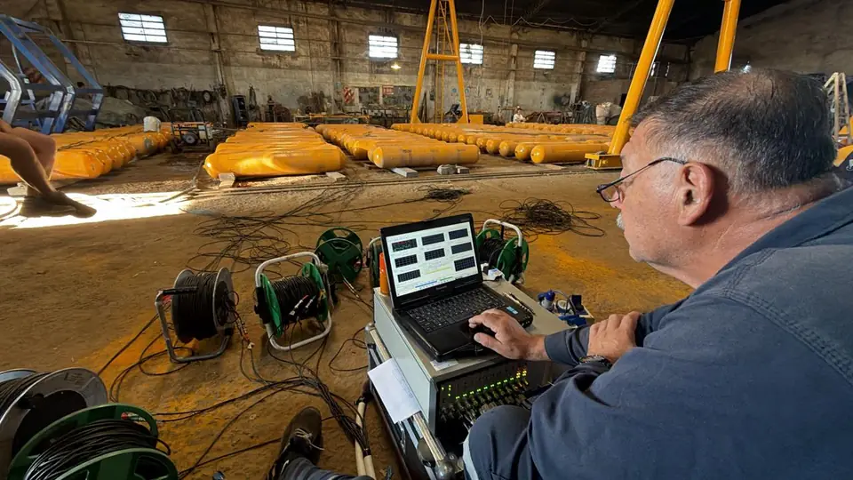

Ensayo por Emisión Acústica (EA)
Método no destructivo que detecta y monitorea, en tiempo real, las ondas de presión elástica liberadas por el material cuando está sometido a un esfuerzo.
- Con el equipo en servicio o durante prueba de cargas
- Defectos antes que problemas
- Aplicado a: Esferas, Tanques de almacenamiento y Recipientes sometidos a presión
¿Qué es la Emisión Acústica?
La Emisión Acústica es un método de Ensayo no Destructivo que aprovecha la adquisición de las señales ultrasónicas emitidas a partir de un material adecuadamente estresado. Estas señales, detectadas por los sensores piezoeléctricos, son transformadas en señales eléctricas y se transmiten, por medio de cables coaxiales de baja impedancia y bajo ruido, a un sistema de procesamiento conectado a un ordenador equipado con un software de adquisición, almacenamiento, análisis y representación gráfica de datos.
Una de las grandes ventajas operativas de este método es que, mediante una red de sensores distribuida, un solo ensayo cubre un recipiente entero sin necesidad de recorrerlo punto por punto. Esto permite detectar discontinuidades y fugas en tanques de almacenamiento, equipos a presión o esferas, evitando abrir o vaciar los equipos.
Es fundamental destacar que la Emisión Acústica funciona como una técnica de evaluación global orientada a localizar las áreas con actividad anómala, en lugar de medir el tamaño exacto de las fallas; por este motivo, las zonas detectadas deben inspeccionarse posteriormente con métodos puntuales para caracterizar la discontinuidad encontrada. En definitiva, resulta ser un ensayo ideal para registrar defectos antes de que se conviertan en problemas y se recomienda especialmente para la inspección periódica en servicio y la supervisión continuada de los equipos e instalaciones.

Inspectores con certificación vigente
- NIVEL III · ISO 9712Emisión Acústica (EA)
- NIVEL II · ISO 9712Emisión Acústica (EA)
Ventajas de la Emisión Acústica
Sin parada del equipo
Se prueba con el activo en servicio o durante una prueba de carga.
Localización de zonas activas
Detección de defectos sobre la superficie.
Cobertura global
Red de sensores acoplados a la pared del equipo.
¿Cómo se realiza el ensayo?
[A completar]
[Descripción de la etapa]
[A completar]
[Descripción de la etapa]
[A completar]
[Descripción de la etapa]
[A completar]
[Descripción de la etapa]
Ensayos de emisión acústica


Lo que suelen consultarnos
¿Hay que vaciar el tanque para el ensayo?
No. Se prueba con el activo en servicio o durante una prueba de carga: mediante una red de sensores, un solo ensayo cubre un recipiente entero, evitando abrir o vaciar los equipos.
¿En qué equipos se aplica?
En esferas, tanques de almacenamiento y recipientes sometidos a presión.
¿Mide el tamaño de las fallas?
No: es una técnica de evaluación global que localiza las áreas con actividad anómala. Las zonas detectadas se inspeccionan después con métodos puntuales para caracterizar la discontinuidad.
¿Cuánto dura el ensayo?
[A completar]